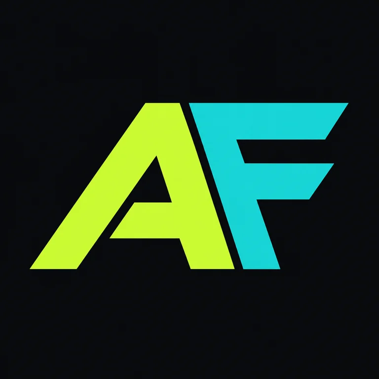
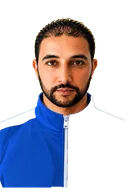

02CONCEPT STUDY
TraceLens
مراقب بصري لمسارات الوكلاء: من الطلب، لاختيار الأداة، إلى الإجابة النهائية.
- AGENTS
- OBSERVABILITY
- EVALS

أحمد فرحات · باحث وصانع
الذكاء يصبح شيئًا تلمسه.
أستكشف المسافة بين الفكرة والكود والآلة. ستة مجالات، وفضول واحد: ماذا يمكن أن نبني بعد؟

AHMED FRAHAT أتعلم. أصمّم. أبني. أشارك.01 / THE FRONTIERS
اهتمامات بحثية ومسارات تجريبية أستكشفها. من ذكاء يفهم، إلى أدوات تبني، إلى أشياء تعيش خارج الشاشة.
الذكاء الذي يلتقي بالعالم الحقيقي: إدراك، حساسات، وحركة. أستكشف كيف نختبر قرار الآلة قبل أن يتحول إلى فعل.
PERCEPTION / ROBOTICS / SIM-TO-REALحوار يتحول إلى كود، ثم إلى اختبارات. يهمني تسريع البناء مع الحفاظ على فهم ما نبنيه والقدرة على تغييره.
PROTOTYPING / HUMAN IN THE LOOP / TESTINGما وراء الشاشة: دوائر وحساسات ومتحكمات. رحلة من التوصيل والقياس إلى نموذج إلكتروني يمكن اختباره.
EMBEDDED SYSTEMS / SENSORS / ELECTRONICSالتصميم كمعادلة قابلة للتغيير. نماذج بارامترية، طباعة ثلاثية الأبعاد، واهتمام بالخامة والتفاوتات وحدود التصنيع.
PARAMETRIC DESIGN / ADDITIVE MANUFACTURINGمن نية مكتوبة إلى مواصفات، ومن نموذج أولي إلى مراجعة. المنتج الجيد يحتاج أسئلة جيدة بقدر ما يحتاج إجابات سريعة.
INTENT / SPECIFICATION / PROTOTYPE / VALIDATIONوكلاء بمهام واضحة وحدود معلنة. أدوات وذاكرة وتقييم، مع بقاء الإنسان قادرًا على الفهم والتدخل.
ORCHESTRATION / TOOL USE / EVALUATION02 / THE INTELLIGENCE ARCADE
الخطوة القادمة لك.
SEARCH / LEARN / PLAN03 / PROMPT → FORM
تجربة بارامترية محلية بثلاثة قوالب. نماذج تصورية قابلة للتصدير، وليست استدلالًا بنموذج ذكاء اصطناعي أو تصميمات معتمدة للتصنيع.
04 / SELECTED WORK
كل مشروع هنا قابل للفحص والتجربة. الكود، القرارات، والقيود جزء من القصة.
قاموس التكنولوجيا الذي يترجم التعقيد، لا الكلمات فقط.
تجربة عربية وإنجليزية تضم 500 مفهوم تقني عبر 11 مجالًا. بحث فوري، روابط مفاهيمية، وبنية بيانات تعمل بالكامل داخل المتصفح.
أسلوب يبحث في مصادر محددة ثم يقدّم المعلومات للنموذج قبل بناء الإجابة.
مراقب بصري لمسارات الوكلاء: من الطلب، لاختيار الأداة، إلى الإجابة النهائية.
محاكاة تفاعلية تكشف أثر حجم المقاطع وعمق الاسترجاع وإعادة الترتيب على الجودة والسرعة.
جرّبها في المعمل ↓05 / LIVE LAB
هذه محاكاة تعليمية داخل المتصفح وليست نتائج benchmark منشورة.
CONFIGURATION
AGENT REQUEST
تفكيك المهمة وتحديد مصادر القياس.
قراءة نتائج التجربة ومقارنة العينات.
اختبار الفرضيات مقابل الأدلة المتاحة.
صياغة نتيجة قابلة للمراجعة.
06 / METHOD
أتعامل مع كل فكرة كمنظومة: سؤال واضح، تجربة قابلة لإعادة التشغيل، وحدود معلنة.
تحويل الفضول إلى فرضية يمكن قياسها أو دحضها.
QUESTION → SIGNAL
تصميم تجربة صغيرة تعزل المتغير المهم وتكشفه بصريًا.
SIGNAL → SYSTEM
البحث عن الحالات التي تفشل فيها الفكرة قبل الاحتفال بما نجح.
SYSTEM → EVIDENCE
مشاركة الكود والمنهج والقيود كي يستطيع شخص آخر التحقق.
EVIDENCE → KNOWLEDGE
REPRODUCIBILITY LEDGER
واجهة خفيفة بلا إطار عمل، قابلة للقراءة والتعديل والنشر من مستودع عام.
07 / ABOUT